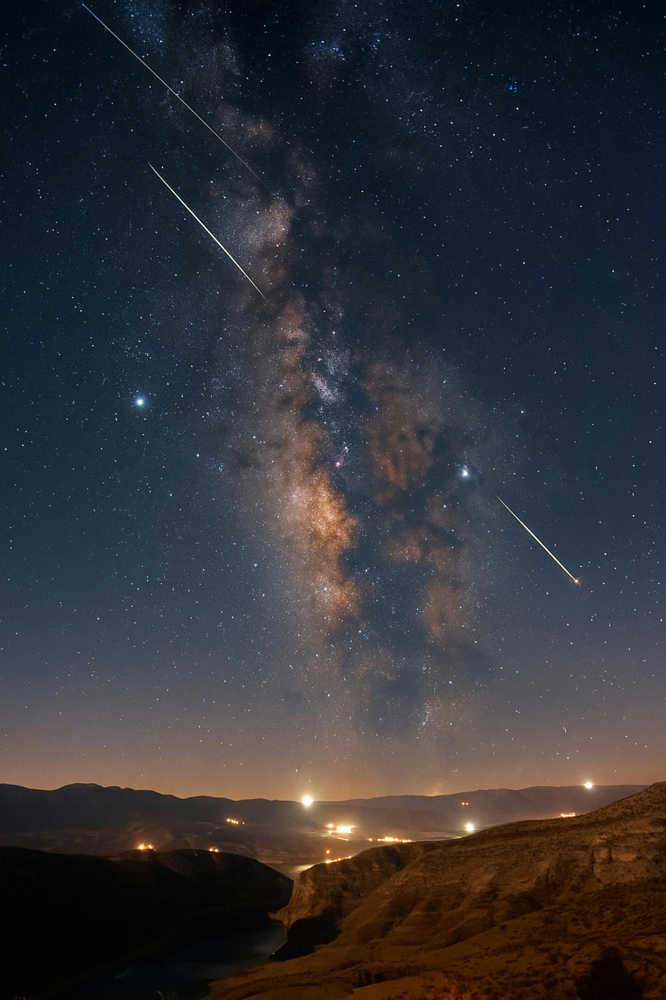

Chuva de Meteoros
Uma chuva de meteoros (popularmente chamada de "chuva de estrelas cadentes") é um fenômeno astronômico que ocorre quando a Terra, em sua órbita ao redor do Sol, atravessa uma região do espaço rica em detritos deixados por um cometa ou asteroide.